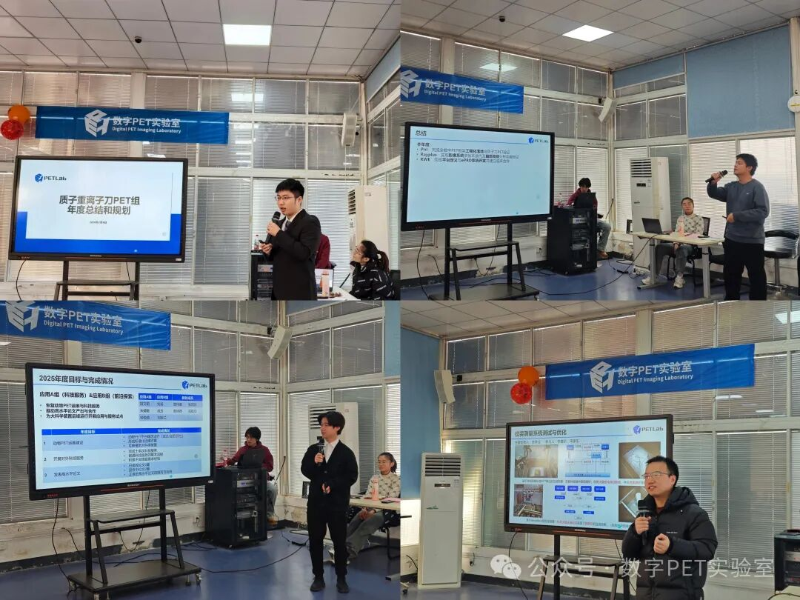
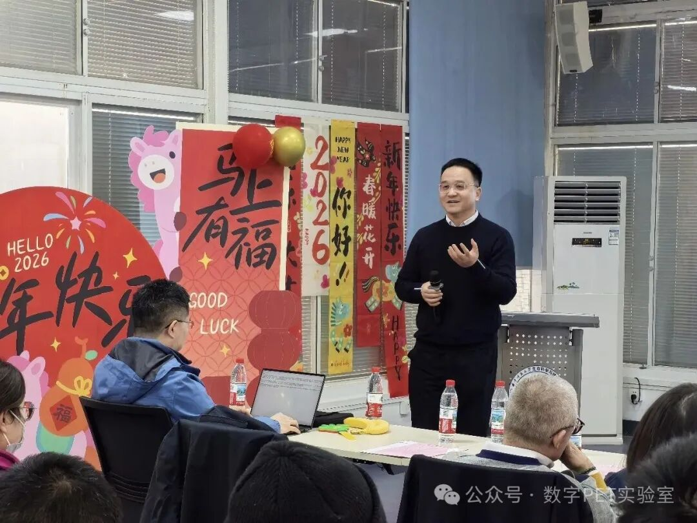
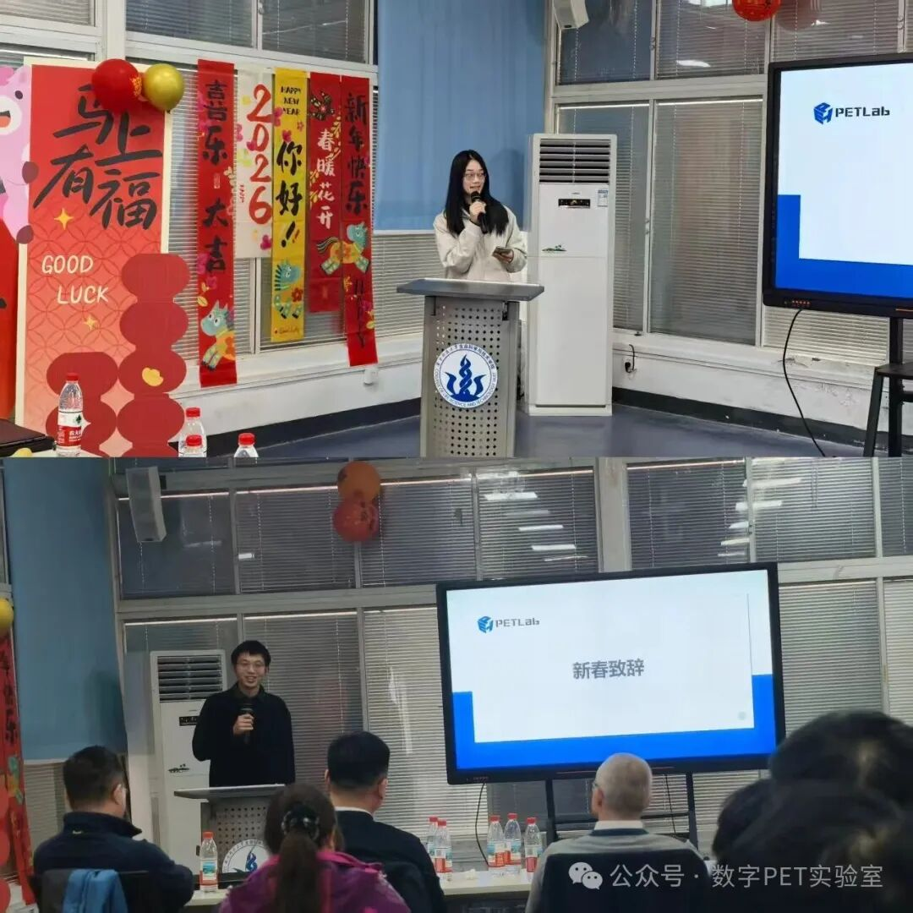
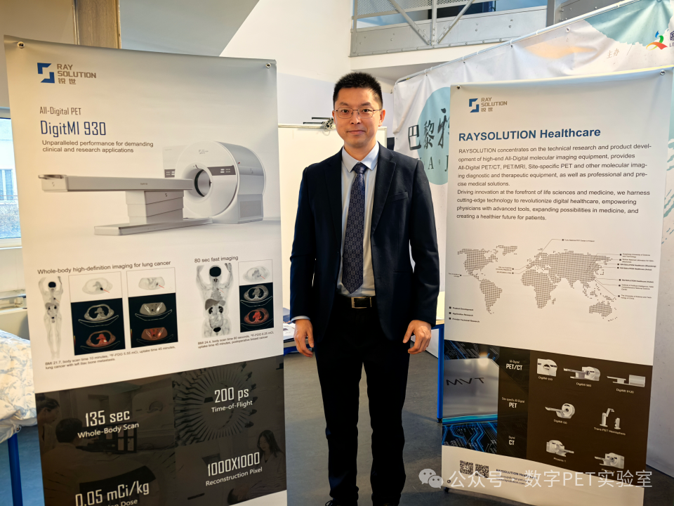
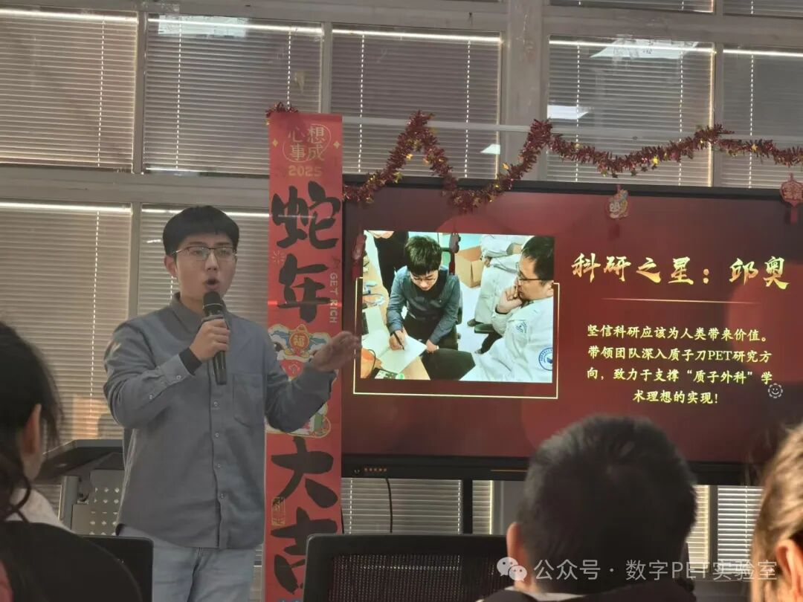
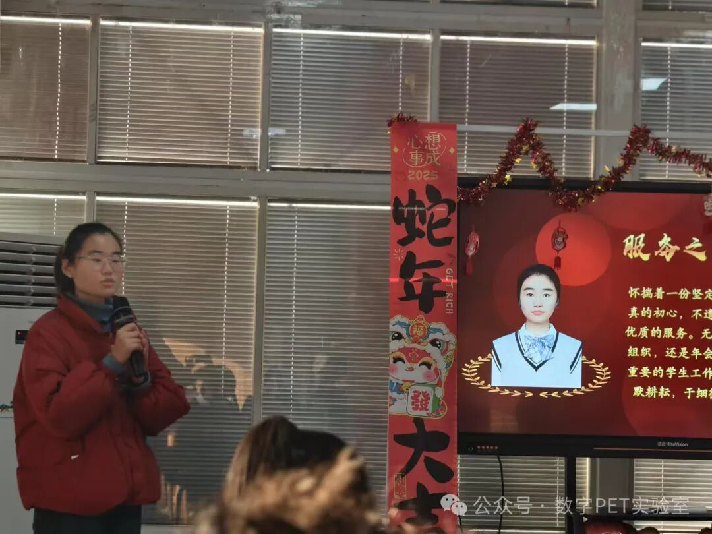
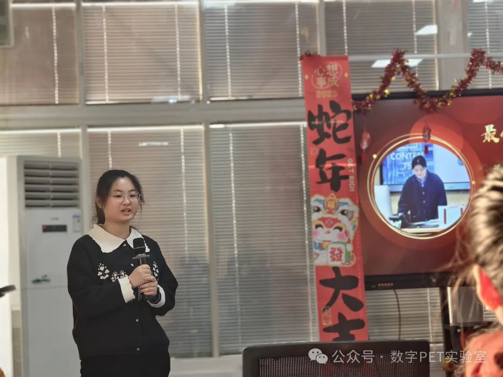
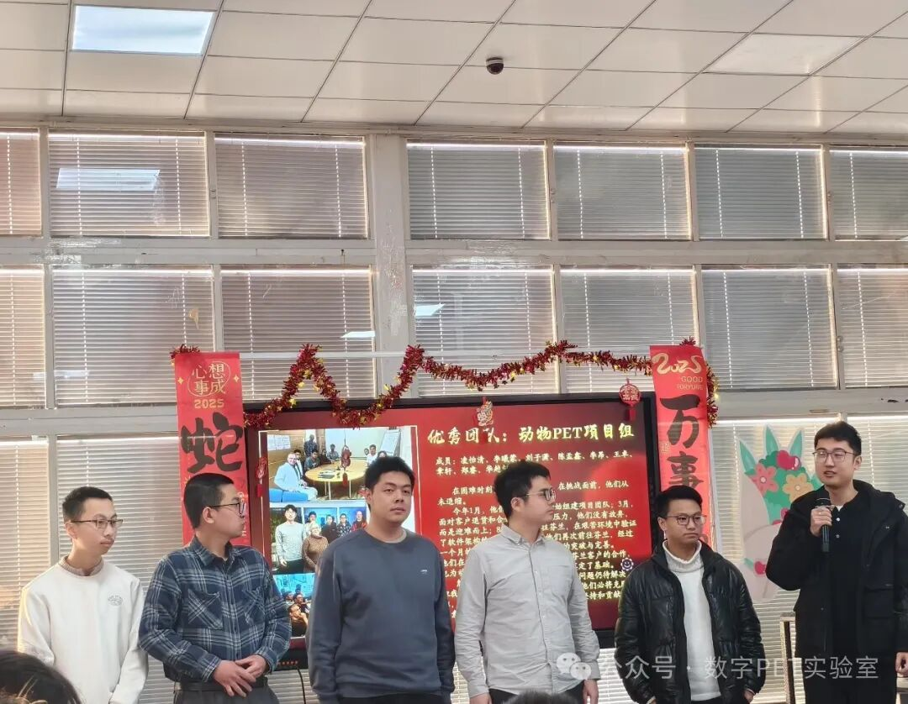
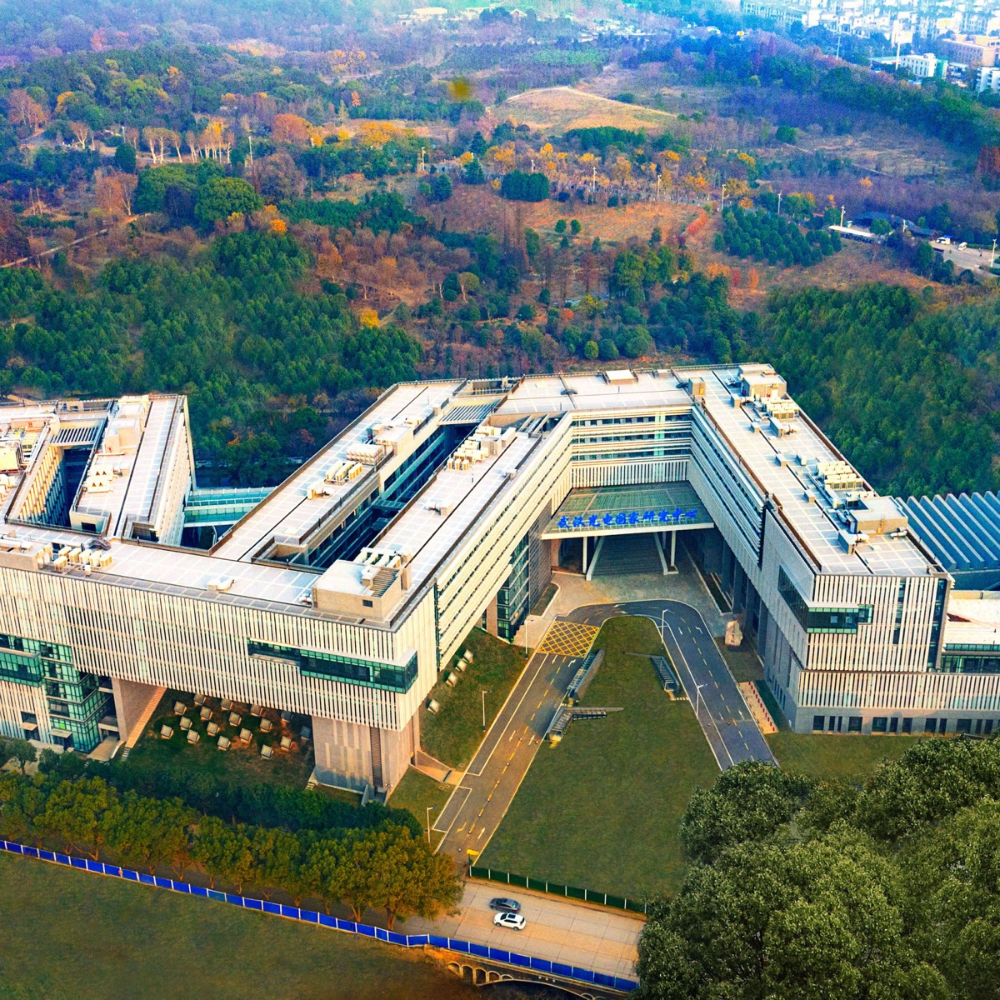

PETLab Life
A community of people who work together to make the nation, and the world become better
At Digital PET Laboratory, you'll find a community of people who work together to make the nation, and the world become better. PETLab recognizes that its success is achieved through the appreciation and support of the unique talents, ideas and experiences of its people.
Laboratory Culture
The balance of independent research and interdisciplinary teamwork forms the core foundation of Digital PET Laboratory’s research success. Every member is empowered to pursue creative thinking and propose original technical solutions. Cross-functional teams spanning medical physics, circuit engineering, signal algorithm development, and clinical translation collaborate closely to advance full-digital PET imaging technology, resolve key bottlenecks in precision medical diagnosis, and translate lab breakthroughs into accessible clinical tools for patients.
Innovative ideas take shape anywhere across our campus: formal discussions in shielded testing labs and high-spec conference rooms, casual exchanges over coffee and refreshments in our shared lounge, or relaxed conversations at outdoor seating areas within our lab grounds. Our green public spaces were redesigned based on staff and UPOP trainee feedback collected via our internal innovation pitch sessions—an internal platform where all lab members can submit research improvement and facility upgrade proposals; viable projects receive timely resource and funding support once approved.
Digital PET Laboratory’s culture is guided by our core values: transparency, academic integrity, research rigor, technological innovation, and diversity, equity, and inclusion. We take pride in our vibrant internal communities, including Employee Resource Groups and dozens of interest-based clubs open to researchers, engineers, graduate students, and UPOP undergraduate trainees alike.
No two weeks at the lab are identical, with constant opportunities for learning and connection. We host regular activities to enrich professional growth and community bonding: expert lectures, technical panel discussions, and hands-on workshops covering medical imaging, semiconductor hardware, AI reconstruction algorithms, and lab safety protocols, among other topics. Our calendar also features lighthearted social gatherings, including dessert mixers, student talent showcases, live academic sharing sessions, and outdoor science fairs open to all lab personnel.
Giving back is an integral part of life at Digital PET Laboratory. Whether through internal mentorship programs pairing senior researchers with UPOP trainees, joint public science outreach campaigns with local hospitals, or collaborative education initiatives for university STEM majors, our team consistently contributes expertise to support local healthcare communities, popularize medical imaging science, and cultivate the next generation of biomedical engineering talent.
PETLab Life
PETLab Life is full of vibrant, diverse social experiences for all lab members. We host regular coffee mixers, outdoor gatherings, talent sharing sessions and casual themed activities alongside interest groups and ERG communities. Supported by comfortable lounge zones and open outdoor spaces, researchers, graduate students and UPOP trainees connect, relax and build warm, lasting friendships beyond academic work.

Annual Academic Progress Report by Digital PET Researchers Qiu Ao, Liu Yu, Hu Wentao and Li Ximeng

New Year Address by Professor Xie Qingguo, Founder of Digital PET Laboratory

New Year Address by Digital PET Researchers Liu Ruolan and Mu Dengyun
Group Photo Taken at the Annual Conference of Digital PET Laboratory

Digital PET Researcher Zhang Bo Attends the Paris Summit

Research Star of the Year: Qiu Ao

Service Star of the Year: Zhu Jingmin

Best Newcomer: Zhong Yueru

Outstanding Team of the Year: Animal PET Project Team
Working at Digital PET Laboratory

Workplace Environment
Digital PET Laboratory builds an interdisciplinary,
innovation-driven workplace centered on medical imaging breakthroughs and inclusive
collaborative culture. Our integrated facilities combine precision imaging test
suites, algorithm development workstations, open discussion zones, and dedicated quiet
pods for one-on-one mentoring and concentrated research work.